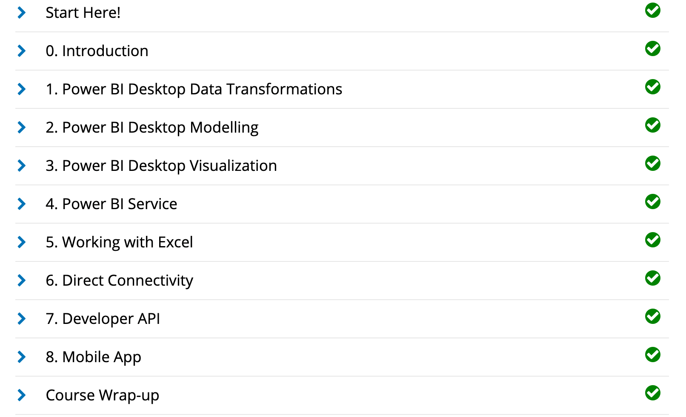
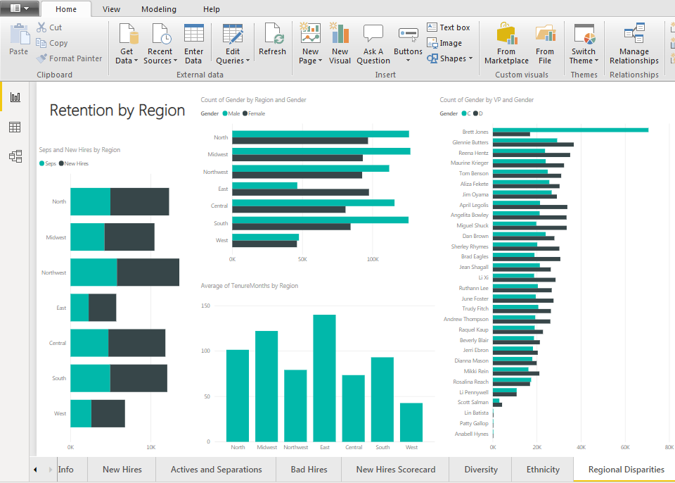

GitHub
This training taught me the basics of the GitHub platform, while also exposing me to fundamental tools such as pull requests, commits and merges.
I also learned the benefits of collaborating with others on writing and sharing code and utilize my personal respositories to maintain code such as this technical resume.
GitHub will prove extremely useful in the future for building individual pieces of larger systems
and referring to public examples of solutions when necessary. Courses completed include:
- First Day on GitHub
- Introduction to GitHub
- Communicating using Markdown
- Uploading your project to GitHub
- First Week on GitHub
- GitHub Pages
- Reviewing pull requests
- Managing merge conflicts
- Securing your workflows


Power BI
I auditted the Analyzing and Visualizing Data with
Power BI course on edX and completed the following courses. These courses taught me how to input data, add and modify elements
on a dashboard, and transform and interpret different kinds of data.
- Power BI Desktop Data Transformations
- Power BI Desktop Modelling
- Power BI Desktop Visualization
- Power BI Service
- Working with Excel
- Direct Connectivity
- Developer API
- Mobile App

Using the knowledge I gained from completing the Power BI edX course, I created a dashboard using the Human Resources sample data provided by Microsoft, in order to demonstrate my ability to organize data in a user-friendly display to draw conclusions and visualize trends.
 takes a closer look at the functions and value of the following
dashboard.
Linux
Introduction to the ubuntu Linux distribution including managing file systems, directories, permissions, & basic scripting.
I completed the LPI Linux Essentials course on Linux Academy. These courses gave me an introduction to the Linux operating system and the Linux kernel, as well as the Linux command line syntax.
- The Linux Community and a Career in Open Source
- Linux Evolution and Popular Operating Systems
- How to Access a Linux Installation
- Major Open Source Applications
- Understanding Open Source Software and Licensing
- ICT Skills and Working in Linux
- Command Line Basics
- Using Directories and Listing Files
- Archiving Files on the Command Line
- Searching and Extracting Data from Files
- Turning Commands into a Script
- The Linux Operating System
- Security and File Permissions
- Basic Security and Identifying User Groups
- Creating Users and Groups
- Managing File Permissions and Ownership
- Special Directories and Files
LPI Linux Essentials Course Completion Certificate:

I configured my own IPSEC AlgoVPN in the cloud on Digital Ocean using the
Algo VPN Ansible scripts provided by Trail of Bits.
With the help of this tutorial, I successfully deployed the Algo server, configured the VPN clients,
set up an SSH tunnel, and added and removed users.
See below: First picture is actual IP. Second picture is masked IP via AlgoVPN. Third picture is a screenshot of the AlgoVPN running on Digital Ocean. (Note: Trailing portions of IPs are obfuscated for security purposes.
Amazon Web Services (AWS)
I completed the AWS Essentials - NEW course on Linux Academy. These courses provided me with an introduction to Amazon's Identity Access Management, Elastic Compute Cloud, database services, Simple Notification System, Elastic Load Balancers, Auto Scaling, and Route 53.
Courses completed include:
- Introduction to cloud concepts including exposure to feature sets available on the AWS platform.
- The benefits cost savings of moving to a AWS cloud environment with concepts such as: pay-as-you-go and elimination of large up-front capital needs.
- AWS’s ability to provide reliable and scalability platforms with built in redundancies to support business continuity efforts.
- A review of the shared responsibility model for AWS security.
Topics included:
- AWS Essentials
- Managing AWS Access with Users, Groups, and Roles
- Identity and Access Management (IAM)
- Networking Services and Connectivity
- Virtual Private Cloud (VPC)
- Compute Services
- Elastic Cloud Compute (EC2)
- Storage Services
- Database Services
- Monitoring, Alerts, and Notifications
- Simple Notification Service (SNS)
- Load Balancing, Elasticity, and Scalability
- Elastic Load Balancer (ELB)
- Auto Scaling
- Route 53
- Serverless Computing - Lambda

After completing the AWS Essentials course, I followed this linked procedure
to configure the IPSec AlgoVPN with AWS
/*
and this linked procedure
to configure and launch the OpenVPN AlgoAccess Server on AWS, deploying on EC2.

 */
*/
PowerShell
I took the PowerShell 5 Essential Training
course provided by LinkedIn Learning. I learned how to format basic powershell commands for basic system management
including an understanding of execution permissions and the powershell help system. Constructing pipelines,
variables and arrays to store outputs be used in other commands. Introduction to scripting and process automation for
system administration.
- Installing Windows Management Framework 5
- Running commands (cmdlets)
- Discovering commands
- Understanding cmdlet syntax
- Resolving terse commands
- Finding and using local modules
- Working with files, printers, CSVs, and XML in the pipeline
- Selecting, sorting, and filtering object data
- Creating scripts
- Automating tasks
- Using PowerShell remoting

SalesForce
Admin Beginner course on Salesforce.
I completed the Admin Beginner course on
Salesforce Trailhead.
This course gave me an introduction to the Salesforce platform, by learning the basics of customizing Salesforce.
- Salesforce Platform Basics
- Data Modeling
- Data Management
- Lightning Experience Customization
- Salesforce Mobile App Customization
- Reports and Dashboards for Lightning Experiene
.jpg)